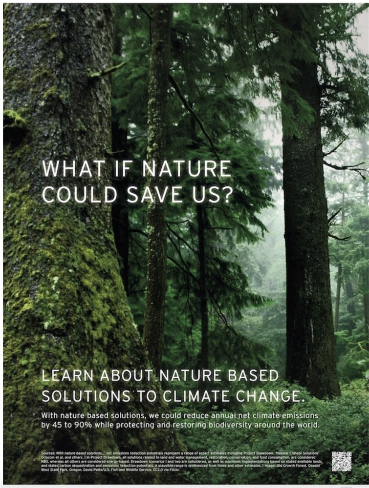
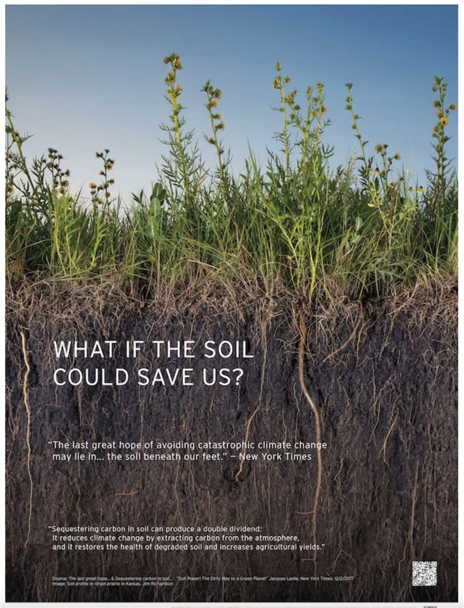
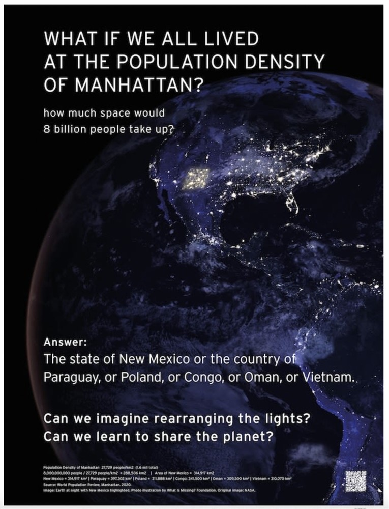
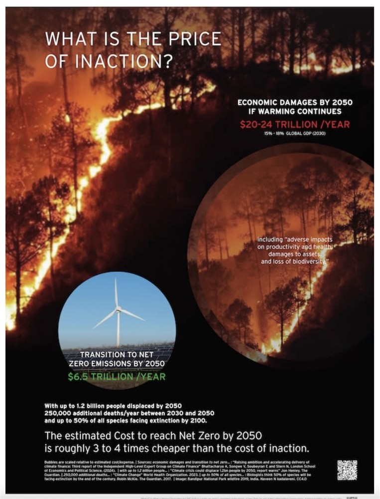
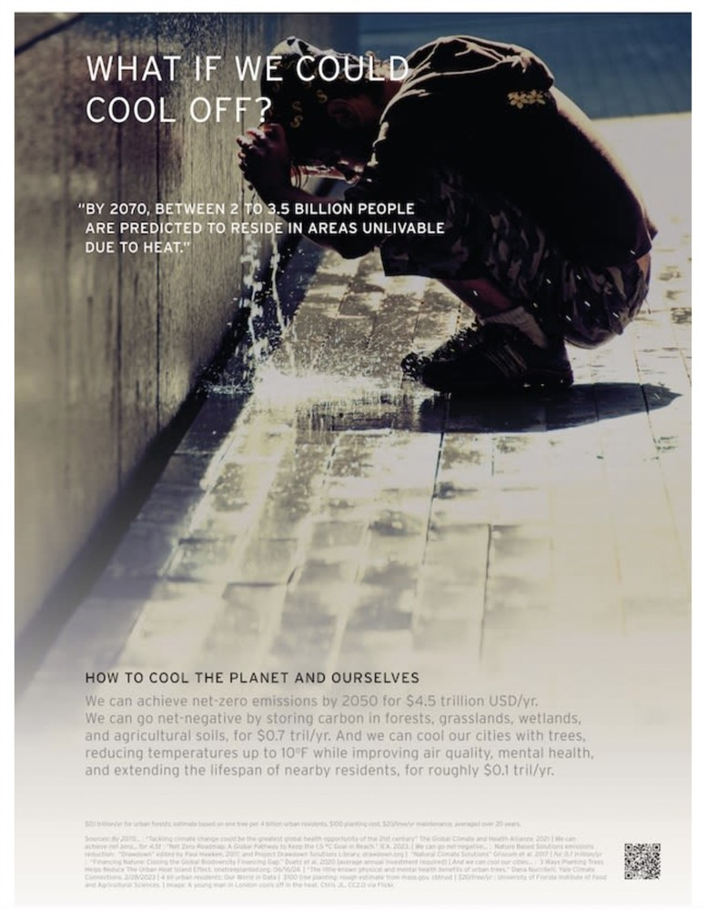

Image above: What If?, Courtesy of Maya Lin and What Is Missing? Foundation for ART 2030.
ON SOURCE: ART 2030
what if nature could save us?
2025
2025
Maya Lin | What Is Missing? Foundation | ART 2030
Related Global Goals
3: Good Health and Well-Being
11: Sustainable Cities and Communities
13: Climate Action
15: Life on Land
17: Partnerships for the Goals
What If? is a public art project by renowned artist and environmental advocate Maya Lin and the What Is Missing? Foundation, presented by ART 2030 on the streets of New York City and at the United Nations Headquarters.
Blending art, science, policy, and storytelling, What If? raises awareness and inspires action on the interconnected issues of climate, nature, health, and hope. Through bold questions and actionable solutions, it invites people everywhere to imagine a healthier, more sustainable future — and recognize their power in shaping it.
Launched during the 80th UN General Assembly and Climate Week NYC, What If? engages both the public and world leaders in urgent conversations about our shared future.
What If? builds on Maya Lin’s longstanding project, What Is Missing?, a multi-sited platform for reimagining our relationship with the planet. What Is Missing? addresses the dual crises of climate change and biodiversity loss, urging us to envision sustainable futures that balance human needs with those of the planet.
Exhibition Dates:
08 – 28 September 2025: Featured across JCDecaux-owned bus shelters throughout all five boroughs of New York City. See locations here
14 – 28 September 2025: On view at the United Nations Headquarters, New York City





What If?, Courtesy of Maya Lin and What Is Missing? Foundation for ART 2030.
MAYA LIN
Portrait of Maya Lin. Photo by Jesse Frohman.
Maya Lin (b. 1959) interprets the natural world through science, history, and culture, to create works that have had a profound impact on how we view our history and how we relate to the natural world. From her very first work, the Vietnam Veteran’s Memorial, she has since gone on to a remarkable and highly acclaimed career in both art and architecture, whilst still being committed to memory works that focus on some of the critical historical issues of our time. Lin is a member of the Bloomberg Foundation, the What is Missing? Foundation, and she is a National Geographic Explorer-at-Large, in 2016 she was awarded the Presidential Medal of Freedom, by President Barack Obama, the nation's highest civilian honor.
'I believe that art can help us imagine and map sustainable future scenarios, and, in doing so, give people a way to see – and hope for – a diferent future. What If? shows how each person’s actions can make a di]erence, and how art can shift our perspective, making these issues feel more manageable. It helps us realize how impactful our actions can be.'
ON SOURCE: ART 2030